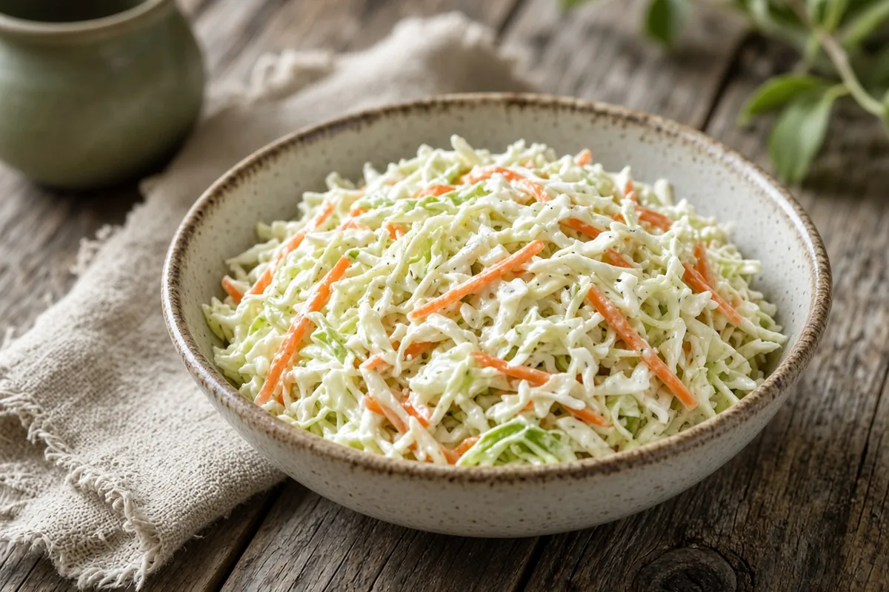

The Best Coleslaw
Classic tangy coleslaw with two vinegars, a little sugar, and celery seed in a mayo dressing. Make it an hour ahead so the flavors blend.

Adapted from spendwithpennies.com
6 servings
By
Yield: 6 servings
Prep:
Total:
Difficulty: Easy
Ingredients
- 6 cups coleslaw mix (cabbage and carrots)
- 1/2 cup mayonnaise or salad dressing
- 1 Tbsp white vinegar
- 1/2 Tbsp cider vinegar
- 2 tsp sugar
- 1/2 tsp celery seeds
- Salt and pepper, to taste
Instructions
- Whisk the mayonnaise, white vinegar, cider vinegar, sugar, celery seeds, salt, and pepper together in a large bowl.
- Add the coleslaw mix and toss to coat.
- Refrigerate at least 1 hour before serving so the flavors blend.
Notes: Keeps 2 to 3 days in the fridge; toss again before serving.